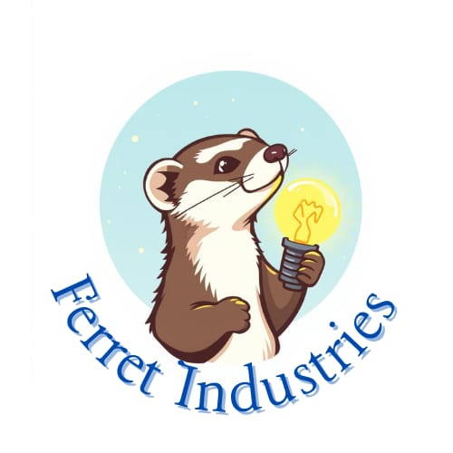

Bright ideas, tailored light!

Ferret Industries
The company's main focus is engineering problem solving. Focusing on the present problems in the engineering world and finding innovative solutions.
The current project of the company includes studio light repairs, upgrades, maintenance, and manufacturing. Studio lights are used by professional photographers to ensure proper lighting in each photo. The studio lights are advanced engineering designs making it an expensive item to buy and repair. This is the main project currently along with numerous other projects.